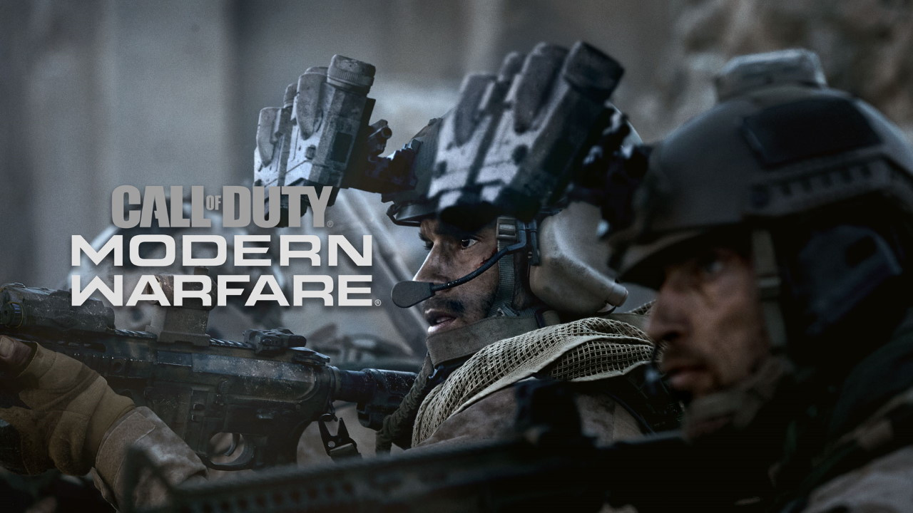
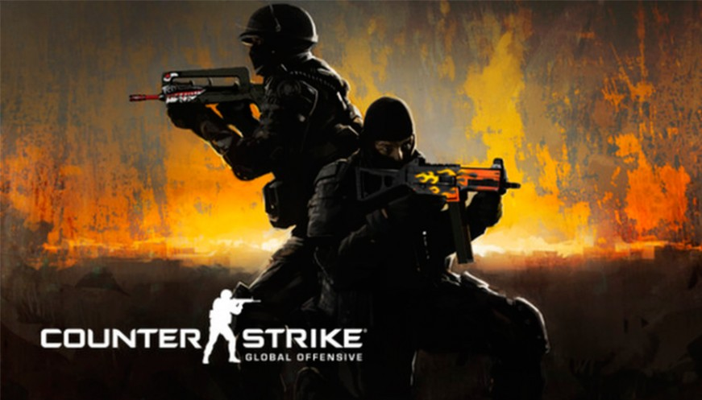

Far Cry 4
Em Far Cry 4, os jogadores se encontram em Kyrat, uma região deslumbrante, perigosa e selvagem do Himalaia lutando sob o regime despático de um rei que se autonomeou. Usando uma vasta gama de armas, veículos e animais, os jogadores vôo escrever sua própria história através de uma paisagem exótica de mundo aberto.

Call of Duty: Modern Warfare
Realize uma campanha visceral ou forme uma equipe em uma derradeira experiência online com diversos desafios de Op. Especiais, uma mistura de mapas e modos do Multijogador e a estreia do sistema de Passe de Batalha da franquia.
Counter-Strike: Global Offensive
Counter-Strike: Global Offensive expande a clássica jogabilidade de ação baseada em equipes. Com um arsenal gigantesco de mais de 45 armas, um monte de mapas, novos modos de jogo, um novo visual. O CS:GO é um 'shooter' tático indispensável.
